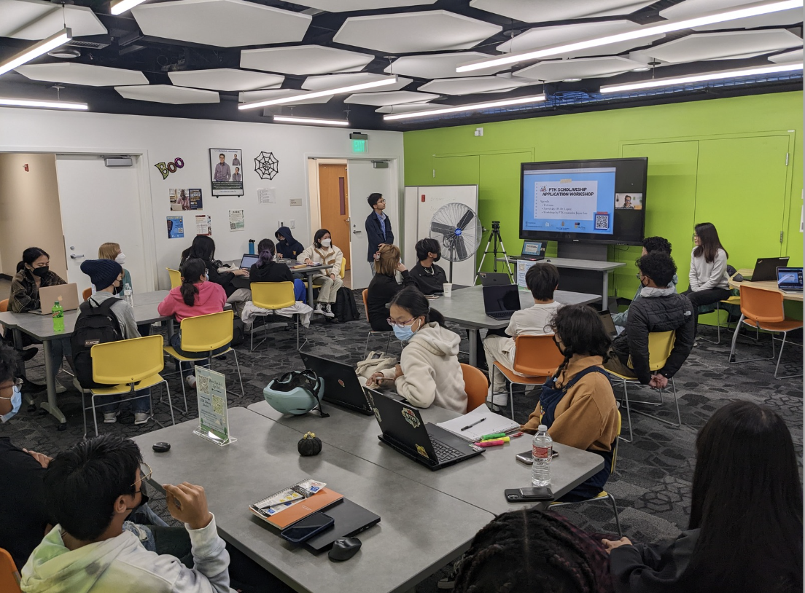
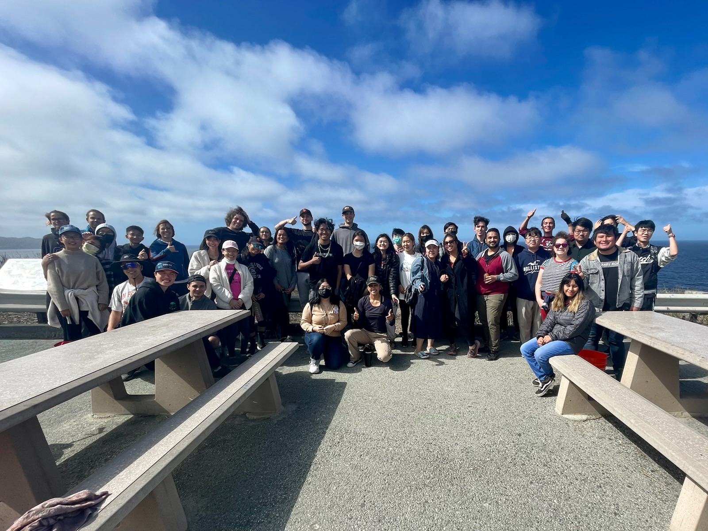

Co-President, Phi Theta Kappa Honor Society (2022–2023)
Led our chapter to rank top 41 out of 1,200+ worldwide! 🎉 Organized 12 campus events — from scholarship and college success workshops to fun socials and beach cleanups. It wasn’t just about honor; it was about heart, community, and lifting each other up.
